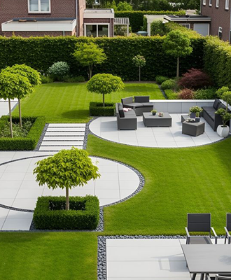
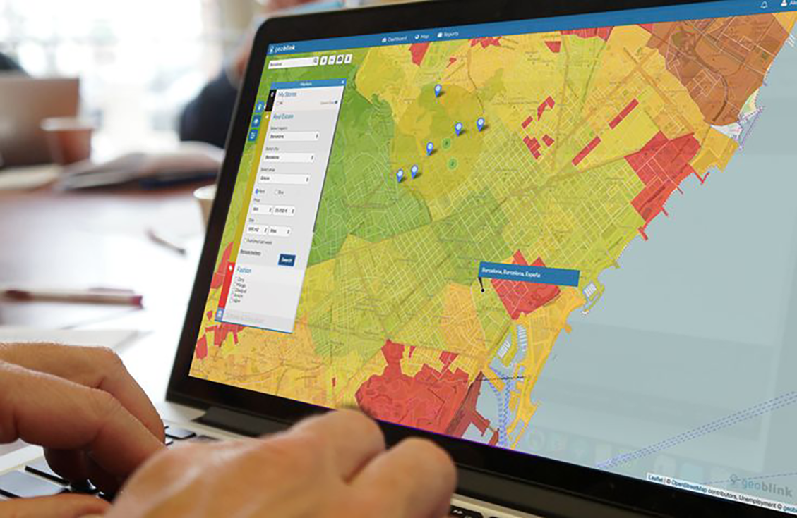

Des formations pratiques, orientées terrain et adaptées aux enjeux
territoriaux modernes.
Développez des compétences solides en géomatique, urbanisme numérique et
technologies spatiales, grâce à des formations conçues par des experts
et basées sur des cas réels.
TÉLÉDÉTECTION - SIG & CARTOGRAPHIE
Programme / Compétence
Initiation et
perfectionnement avec QGIS et ArcGIS
Cartographie thématique
professionnelle
Analyse spatiale appliquée
Traitement d'images
satellitaires multidpectrales
Outils
ENVI | R | Python | QGIS |
ArcGIS

AMÉNAGEMENT PAYSAGER & SIG
Programme / Compétence
Analyse spatiale paysagère
Trames vertes et
planification des espaces verts
Analyse spatiale appliquée
Modélisation 3D
Outils
ArchiCAD | AutoCAD |
TwinMotion

CARTOGRAPHIE INTERACTIVE - WEBSIG
Programme / Compétence
Introduction au WebSIG
Cartes interactives avec
Leaflet
Publication et diffusion de
données spatiales
Développement Web
(FrontEND/BackEND)
Outils
Geoserver |
PostgreSQL/Postgis | Leaflet | R | HTML - CSS - Javascript
COLLECTE DE DONNÉES TERRAIN
Programme / Compétence
Préparation des missions de
terrain
Conception et implémentation de questionnaires numérique
Collecte de données et
analyse
Gestion des données
spatiales
Outils
KoboCollect | Qfield | Qgis |
SPSS
URBANISME NUMÉRIQUE
Programme / Compétence
SIG appliqué à la
planification urbaine
Opération immobilière | Lotissement
Outils numériques pour
collectivités
Modélisation 3D
Outils
QGIS | ArchiCAD | AutoCAD |
TwinMotion
AUTRES FORMATIONS
Programme / Compétence
Architecture
Infographie
Montage vidéo Modélisation 3D
Outils
Illustrator | Photoshop |
PremierPro | After Effect